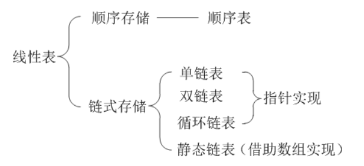

线性表是具有相同特性的数据元素的一个有限序列。
特点：
1.唯一一个首元素，
2.唯一一个尾元素，
3.除了首尾元素之外，其他元素只有一个直接前驱，
4.除了首尾元素之外，只有一个直接后继，
5.同一性：线性表的所有数据的类型是一致的，
6.有限性：元素个数有限，
7.有序性：元素之间是有序的。
线性数据的存储：顺序表（开辟连续的一块内存，依次放进去），链表（类似于单线联系）
把线性表中的所有元素按照其逻辑顺序依次存储在计算机存储器中指定存储位置开始的一块连续的存储空间中。 在Java中创建一个数组对象就是分配了一块可供用户使用的连续的存储空间，该存储空间的起始位置就是由数组名表示的地址常量。 线性表的顺序存储结构是利用数组来实现的。
顺序表的查找
顺序表查找的基本思想： 将给定的元素与顺序表中每个元素依次比较; 若找到与其相等的元素，则查找成功;返回该 元素在顺序表中的位序值; 若比对完整个顺序表都没有找到与其相等的元 素，则查找失败，返回值0。
顺序表的插入
顺序表元素个数加一，顺序表长度加一。
顺序表的删除
顺序表元素减一，长度减一，删除第i个元素，则i+1到第n个元素下标减少一。
顺序表的合并
先对每一个元素依次查找，再将没有的元素插入。
逻辑上相邻的两个元素在物理上也相邻;
他的存储位置可以通过公式直接计算;
需要预分配较大空间;
做插入、删除操作时要移动大量元素;
表的容量难以扩充;
顺序表必须占用一整块事先分配大小固定的存储空间，这样不便于存储空间的管理。为此提出了可以实现存储空间动态管理的链式存储方式–链表。
链表分类：单链表、双链表、循环链表。（这里只介绍单链表）
单链表的定义
所谓单链表，就是链式存储的线性表； 每个数据节点中只包含一个指针域，用来指出后继结点的位置。最后一个节点没有后继，指针域为空NULL; 设置一个表头指针Head (H)，指向链表的第一个节点。
几个基本概念
首结点：用于存储线性链表第一个数据元素的结点。
头结点：链表的首结点前附加的一个结点，将对第一个结点的处理和对其它结点的处理统一。
头指针：指向单链表第一个结点的指针(指向头节点或第一个元素结点)。
头指针变量：该变量的值是指向单链表的第一个结点的指针，用于表示单链表
单链表是一种非随机存取存储数据结构，可以通过结构体定义。